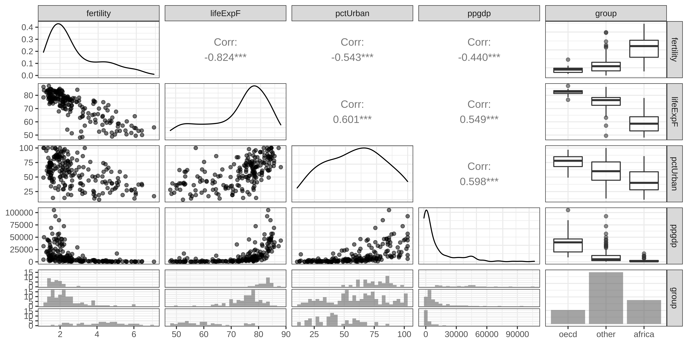
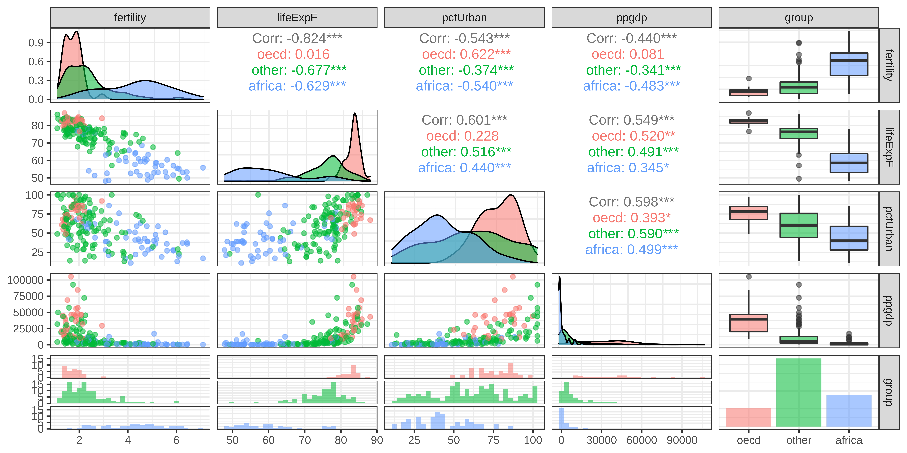

library(tidyverse) # for data wrangling
library(alr4) # for the data sets #
library(GGally)
library(parameters)
library(performance)
library(see)
library(car)
library(broom)
library(modelsummary)
library(texreg)
ggplot2::theme_set(ggplot2::theme_bw())
knitr::opts_chunk$set(
fig.width = 10,
fig.asp = 0.618,
fig.retina = 3,
dpi = 300,
out.width = "100%",
message = FALSE,
echo = TRUE,
cache = TRUE
)
my_gof <- function(fit_obj, digits = 4) {
sum_fit <- summary(fit_obj)
stars <-
pf(sum_fit$fstatistic[1],
sum_fit$fstatistic[2],
sum_fit$fstatistic[3],
lower.tail=FALSE) %>%
symnum(corr = FALSE, na = FALSE,
cutpoints = c(0, .001,.01,.05, 1),
symbols = c("***","**","*"," ")) %>%
as.character()
list(
# `R^2` = sum_fit$r.squared %>% round(digits),
# `Adj. R^2` = sum_fit$adj.r.squared %>% round(digits),
# `Num. obs.` = sum_fit$residuals %>% length(),
`Num. df` = sum_fit$df[[2]],
`F statistic` =
str_c(sum_fit$fstatistic[1] %>% round(digits), " ", stars)
)
}
screen_many_regs <-
function(fit_obj_list, ..., digits = 4, single.row = TRUE) {
if (class(fit_obj_list) == "lm")
fit_obj_list <- list(fit_obj_list)
if (length(rlang::dots_list(...)) > 0)
fit_obj_list <- fit_obj_list %>% append(rlang::dots_list(...))
# browser()
fit_obj_list %>%
screenreg(
custom.note =
map2_chr(., seq_along(.), ~ {
str_c("Model ", .y, ": ", as.character(.x$call)[[2]])
}) %>%
c("*** p < 0.001; ** p < 0.01; * p < 0.05", .) %>%
str_c(collapse = "\n") ,
digits = digits,
single.row = single.row,
custom.gof.rows =
map(., ~my_gof(.x, digits)) %>%
transpose() %>%
map(unlist),
reorder.gof = c(3, 4, 5, 1, 2)
)
}Omitted Variable Bias
MP223 - Applied Econometrics Methods for the Social Sciences
Eduard Bukin
R setup
Omitted Variable Bias
In multiple regression, Ceteris Paribus is achieved by introducing control variables.
Warning
Having insufficient or not right controls leaves us with the Selection Bias, which is called OVB - Omitted Variable Bias in the regression analysis.
Omitted Variable
Long Model
\[Y_i = \alpha ^ l + \beta ^ l P_i + \gamma A_i + e^l_i\]
where:
- \(Y_i\) is the outcome variable;
- \(P_i\) is the key variable of treatment effect;
- \(\alpha ^ l\) , \(\beta ^ l\) are true regression coefficients;
- \(\gamma\) is the effect of omitted variable in long;
- \(A_i\) is the omitted variable;
Omitted Variable
Long Model
\[Y_i = \alpha ^ l + \beta ^ l P_i + \gamma A_i + e^l_i\]
where:
- \(Y_i\) is the outcome variable;
- \(P_i\) is the key variable of treatment effect;
- \(\alpha ^ l\) , \(\beta ^ l\) are true regression coefficients;
- \(\gamma\) is the effect of omitted variable in long;
- \(A_i\) is the omitted variable;
Short model
\[Y_i = \alpha ^ s + \beta^s P_i + e^s_i\]
Is the model that omit one or more variables compare to the long one.
OVB logic
Omitted Variable Bias (1/3)
Omitted variable \(A_i\) causes bias if:
\(P_i\) and \(A_i\) relates to each other:
- \(E[A_i|P_i] \neq 0\) ; or
- in a regression \(A_i = \pi_0 + \pi_1 P_i + u\) , \(\pi_1 \neq 0\) ;
\(A_i\) and \(Y_i\) relates to each other:
- \(E[Y_i| A_i] \neq 0\) in the long regression or \(\gamma \neq 0\));
\(A_i = \pi_0 + \pi_1 P_i + u\) is an auxiliary regression because it helps us understand the true causal relationship.
Omitted Variable Bias (2/3)
\(\textit{Biased effect of treatment in short} = \\ \textit{True effect of treatment in long} + \\ ([\textit{Relationship between OV and treatment}] \times \\ [\textit{Effect of OV in long}])\)
Omitted Variable Bias (3/3)
- \(\textit{OVB} = \\ \beta^s - \beta^l = \pi_1 \times \gamma = \\ \textit{Regression of omitted on included } \times \\ \textit{Effect of Omitted Variable in long}\)
- \(\beta^s\) is the biased effect of treatment in short;
- \(\beta^l\) is the true effect of treatment in long;
- \(\pi_1^l\) is the coef. of treatment in the auxiliary of omitted on included (indep. in short);
- \(\gamma\) is the coef. of Omitted variable in long regression;
Why OVB formula is important?
Omitted Variable - means that we cannot have it in the regression!
We can’t use data to check the consequences of omitting variables that we don’t observe.
Having knowledge of mathematics behind OVB, we can make an educated guess about consequences of variable omission: the BIAS (Angrist and Pischke 2014)
For example, we can write our:
- auxiliary regression: \(A_i = \pi_0 + \pi_1 P_i + u\) ; and
- potential regression: \(Y_i = \alpha ^ l + \beta^l P_i + \gamma A_i + e^l_i\)
because \(\text{OVB} = \pi_1 \times \gamma\)
- we can speculate about signs of \(\pi_1\) and \(\gamma\)
- we can justify how omitted variable biases our regression: upwards (increasing the effect of interest) or downwards (decreeing it).
How to resolve the OVB?
No solution!
- Find proxies
- Develop an elaborate research design
Acknowledge presence of the OVB
Discuss the extent of bias
Example 1: Empirical proof of the OVB
MLR: fertility rates and development
We explore UN11 data from (Weisberg 2005)
It has 199 observations and 6 variables
Variables are:
fertility- number of children per woman;lifeExpF- Female life expectancy, years;ppgdp- Per capita gross domestic product in US dollars;pctUrban- Percent of Urban population;group- variable with 3 values “oecd”, “africa” and “others”;africa,otherandoecd- dummy variables taking values of 1 if a country is in respectively Africa, other countries or OECD.
Research question
How does the life expectancy affect fertility?
Empirical model
Short model: \(\hat{fertility} = f(\textit{lifeExpF}, \textit{pctUrban}, \textit{group})\)
This is, however, incomplete model, as we intentionally omitted variable \(\textit{ppgdp}\), which might be very important.
The long model should actually be \(\hat{fertility} = f(\textit{lifeExpF}, \textit{pctUrban}, \textit{group}, \textit{ppgdp})\)
Data
Code
Rows: 199
Columns: 8
$ group <fct> other, other, africa, africa, other, other, other, other, oe…
$ fertility <dbl> 5.968, 1.525, 2.142, 5.135, 2.000, 2.172, 1.735, 1.671, 1.94…
$ ppgdp <dbl> 499.0, 3677.2, 4473.0, 4321.9, 13750.1, 9162.1, 3030.7, 2285…
$ lifeExpF <dbl> 49.49, 80.40, 75.00, 53.17, 81.10, 79.89, 77.33, 77.75, 84.2…
$ pctUrban <dbl> 23, 53, 67, 59, 100, 93, 64, 47, 89, 68, 52, 84, 89, 29, 45,…
$ Africa <int> 0, 0, 1, 1, 0, 0, 0, 0, 0, 0, 0, 0, 0, 0, 0, 0, 0, 0, 1, 0, …
$ Other <int> 1, 1, 0, 0, 1, 1, 1, 1, 0, 0, 1, 1, 1, 1, 1, 1, 0, 1, 0, 1, …
$ OECD <int> 0, 0, 0, 0, 0, 0, 0, 0, 1, 1, 0, 0, 0, 0, 0, 0, 1, 0, 0, 0, …Descriptive statistics
Unique (#) Missing (%) Mean SD Min Median Max
1 fertility 193 0 2.8 1.3 1.1 2.3 6.9
2 ppgdp 199 0 13012.0 18412.4 114.8 4684.5 105095.4
3 lifeExpF 192 0 72.3 10.1 48.1 75.9 87.1
4 pctUrban 80 0 57.9 23.4 11.0 59.0 100.0
5 Africa 2 0 0.3 0.4 0.0 0.0 1.0
6 Other 2 0 0.6 0.5 0.0 1.0 1.0
7 OECD 2 0 0.2 0.4 0.0 0.0 1.0Data visualization
Data visualization by group
Regression
Short regression - important control variable is omitted
Parameter | Coefficient | SE | 95% CI | t(194) | p
--------------------------------------------------------------------------
(Intercept) | 9.79 | 0.73 | [ 8.34, 11.24] | 13.35 | < .001
lifeExpF | -0.09 | 9.62e-03 | [-0.11, -0.07] | -9.63 | < .001
pctUrban | -5.11e-03 | 2.89e-03 | [-0.01, 0.00] | -1.77 | 0.078
group [other] | -0.15 | 0.16 | [-0.48, 0.17] | -0.94 | 0.350
group [africa] | 0.20 | 0.26 | [-0.31, 0.71] | 0.78 | 0.438 Educated guess: effect of the OV (1/3)
==================================
Model 1
----------------------------------
(Intercept) 9.7910 (0.7332) ***
lifeExpF -0.0926 (0.0096) ***
pctUrban -0.0051 (0.0029)
groupother -0.1544 (0.1649)
groupafrica 0.2008 (0.2585)
----------------------------------
R^2 0.6899
Adj. R^2 0.6835
Num. obs. 199
Num. df 194
F statistic 107.8967 ***
==================================
*** p < 0.001; ** p < 0.01; * p < 0.05
Model 1: fertility ~ lifeExpF + pctUrban + groupImportant omitted variable is GDP per capita.
What could be the bias?
Does the BIAS:
- increases or decreases the coefficient of interest?
- makes the coefficient of interest significant or insignificant?
Educated guess: effect of the OV (2/3)
\(\textit{OVB} = \pi_1 \times \gamma\)
- \(\pi_1^l\) is the coef. of treatment in the auxiliary of omitted on included (indep. in short);
- \(\gamma\) is the coef. of Omitted variable in long regression;
Educated guess: effect of the OV (3/3)
What would be the Effect of GDP on fertility (\(\gamma\)) if we had a long regression?
- Decreasing effect or \(\gamma < 0\) ;
What would be the effect of life expectancy on the GDP (\(\pi_1\)) in auxiliary regression?
- Countries with higher GDP have longer life expectancy: \(\pi_1 > 0\) ;
Therefore: \(\textit{OVB} < 0\)
the OV biases our estimates by making coefficient of life expectancy lower than it actually is.
Calculating Omitted Variable Bias
Process:
Estimate long and auxiliary regressions
Extract relevant coefficients and calculating the bias
Step 1. Estimate long and auxiliary regressions
Code
=========================================================
Model 1 Model 2
---------------------------------------------------------
(Intercept) 2.8737 (0.7586) *** 10.5082 (0.7359) ***
lifeExpF 0.0649 (0.0100) *** -0.0765 (0.0103) ***
pctUrban 0.0282 (0.0030) *** 0.0019 (0.0034)
groupother -0.8547 (0.1706) *** -0.3678 (0.1697) *
groupafrica -0.8990 (0.2674) *** -0.0236 (0.2576)
log(ppgdp) -0.2496 (0.0672) ***
---------------------------------------------------------
R^2 0.7545 0.7106
Adj. R^2 0.7495 0.7031
Num. obs. 199 199
Num. df 194 193
F statistic 149.0759 *** 94.7652 ***
=========================================================
*** p < 0.001; ** p < 0.01; * p < 0.05
Model 1: log(ppgdp) ~ lifeExpF + pctUrban + group
Model 2: fertility ~ lifeExpF + pctUrban + group + log(ppgdp)Step 2. Extract relevant coefficients and calculating the bias
beta_s <- fit_s %>% tidy() %>% filter(term == "lifeExpF") %>% pull(estimate)
beta_l <- fit_l %>% tidy() %>% filter(term == "lifeExpF") %>% pull(estimate)
pi_1 <- fit_ax %>% tidy() %>% filter(term == "lifeExpF") %>% pull(estimate)
gam <- fit_l %>% tidy() %>% filter(term == "log(ppgdp)") %>% pull(estimate)OVB:
or OVB:
Interpreting the results with OVB
=========================================================
Model 1 Model 2
---------------------------------------------------------
(Intercept) 9.7910 (0.7332) *** 10.5082 (0.7359) ***
lifeExpF -0.0926 (0.0096) *** -0.0765 (0.0103) ***
pctUrban -0.0051 (0.0029) 0.0019 (0.0034)
groupother -0.1544 (0.1649) -0.3678 (0.1697) *
groupafrica 0.2008 (0.2585) -0.0236 (0.2576)
log(ppgdp) -0.2496 (0.0672) ***
---------------------------------------------------------
R^2 0.6899 0.7106
Adj. R^2 0.6835 0.7031
Num. obs. 199 199
Num. df 194 193
F statistic 107.8967 *** 94.7652 ***
=========================================================
*** p < 0.001; ** p < 0.01; * p < 0.05
Model 1: fertility ~ lifeExpF + pctUrban + group
Model 2: fertility ~ lifeExpF + pctUrban + group + log(ppgdp)Example 2: Wage, education and ability
References
Angrist, Joshua D., and Jörn-Steffen Pischke. 2014. Mastering’metrics: The Path from Cause to Effect. Princeton University Press.
Weisberg, Sanford. 2005. Applied Linear Regression. John Wiley & Sons, Inc. https://doi.org/10.1002/0471704091.